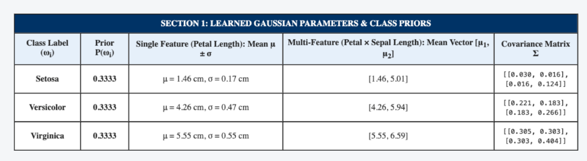
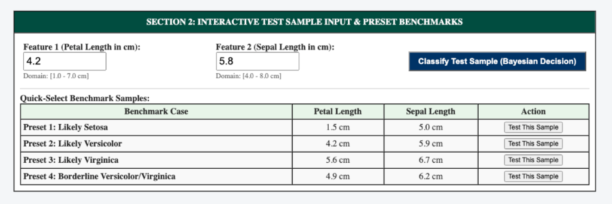
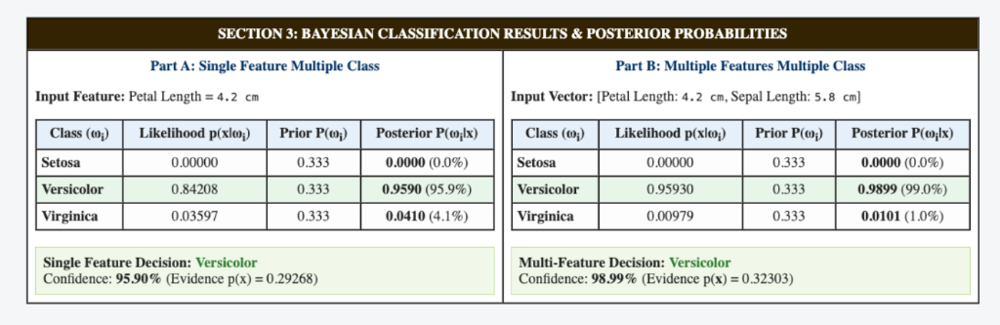
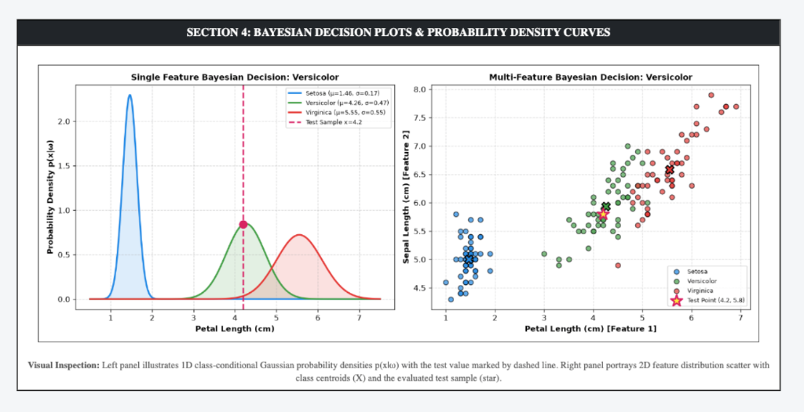

| Experiment No.: | 04 | Student Name: | Monis |
| Course / Branch: | B.Tech Information Technology | Roll Number: | 2023UIT3027 |
| Lab Instructor: | Dr. Vishal Maheshkar | Academic Session: | 2026–2027 |
Bayesian Classification for Single Feature & Multiple Features Multiple Class Using Flask
To design, formulate, and deploy an interactive Flask web application to perform pattern classification using the Bayesian framework for both 1) Single Feature Multi-Class models and 2) Multiple Features Multi-Class models. The system fits Gaussian class-conditional likelihoods, calculates posterior class probabilities, and classifies arbitrary user-supplied test samples according to the Maximum A Posteriori (MAP) decision rule.
Bayesian Pattern Classification: A statistical decision-theoretic approach that minimizes classification error by combining prior knowledge of class prevalences with class-conditional likelihood evidence observed from sample features.
Class-Conditional Likelihood: The probability density of observing feature vector x given that the true class is ωk, modeled via univariate or multivariate Normal distributions.
Maximum A Posteriori (MAP) Rule: An optimal classification criterion assigning candidate sample x to the class yielding the highest posterior probability P(ωk | x).
For K mutually exclusive and exhaustive classes ω1, ω2, …, ωK and observed feature vector x:
When modeling a single continuous scalar feature x ∈ ℜ:
When modeling a d-dimensional feature vector x ∈ ℜd (e.g., d = 4 for Iris):
The optimal decision boundary classifies test vector x by maximizing log-posterior scores:
Displays empirical class priors, univariate Gaussian means/variances, and full 4x4 multivariate covariance matrices across classes.

Slider and numeric entry controls allowing users to supply arbitrary continuous test features for real-time classification.

Shows resulting likelihoods, normalized posterior probabilities summing to 1.0, and final predicted class label.

Visualization of bell-shaped probability density curves showing class overlap and 2D bivariate Gaussian contour decision boundaries.

Experiment 4 verified the theoretical rigor and practical efficacy of Bayesian pattern classification. By evaluating both Single Feature (univariate Gaussian) and Multiple Feature (multivariate Gaussian with full covariance matrices) models, the application demonstrated how Mahalanobis distance and class covariance geometry govern optimal decision surfaces under the Maximum A Posteriori (MAP) rule, achieving optimal error minimization.